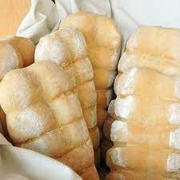
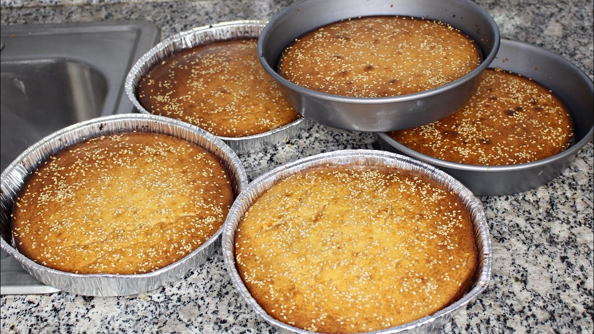

Sobre Mí
¡Hola! Soy Carlos Samuel Armas Cuellar, un apasionado de la panadería. Me gusta mucho este trabajo y cada año que salgo de vacaciones, trabajo con mi papá. La verdad es que me gusta mucho más que todo el ambiente que hay en la panadería, pero sobre todo, le doy gracias a mi padre por tomarse el tiempo en enseñarme ese oficio.
Mi Amor por Hacer Pan
Desde pequeño/a, he sentido una conexión especial con la panadería. La verdad es que encontré una habilidad para manejar la masa y crear diferentes tipos de pan que es asombrosa. Me admiro por mis habilidades y siempre estoy emocionado de aprender algo nuevo de la panadería, y siempre hacer el pan con amor.
Proceso de Hacer Pan
El proceso de hacer pan es fascinante y gratificante. Los alimentos son muy deliciosos, pero también es una experiencia profundamente satisfactoria y enriquecedora para mí. Es un arte realizar el pan, y lo mejor es hacerlo a la par de mi papá.
Galería de Panes

Descripción: 4 tazas de harina, 1 cucharada de sal, 1 cucharada de levadura, 2 cucharadas de azúcar, 1 ¾ taza de agua.

Tiempo Dedicado a la Panadería
Desde que era un niño, siempre estuve fascinado por el arte de hacer pan.
Recuerdo vívidamente los aromas tentadores que emanaban de la panadería de mi vecindario, y cómo me quedaba hipnotizado observando a los panaderos trabajar su magia con la masa.
Pero mi historia con la panadería comenzó cuando tenía 8 años, cuando decidí seguir mi pasión y aprender de un gran oficio.
Hoy dedico todo mi tiempo en las vacaciones la energía a mi panadería.
Cada vez que salgo de vacaciones, me levanto temprano para comenzar el proceso de horneado, y cada noche me acuesto con una sonrisa en el rostro, sabiendo que he compartido un poco de felicidad con aquellos que disfrutan de mi pan.
Para mí, la panadería no es solo un trabajo, es mi pasión, pero también mi mayor sueño trabajar en una empresa de programador pero nunca olvidar el oficio que me enseño mi papá.